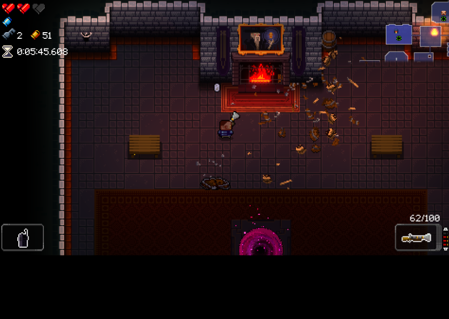
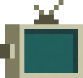

-
Dentro de la mazmorra existen una gran cantidad de secretos muchos de los cuales el propio juego explica por lo que solo mencionare algunos de los que a mi parecer son de los mas importantes
-
Esta es una llave que aparecerá de vez en cuando cuando elimines a un enemigo con la cual se puede desbloquear algo de gran importancia
-
Esta fogata que se encuentra en el primer piso parece ser importante, si tan solo tuvieras una forma de apagara. 
-
 Esta televisión parece estar rota y no puede funcionar, pero si tienes a alguien que la pueda arreglar puede valer la pena llevarla
-
Esa bala viva parece que no quiere pelear, es mas, parece que solo quiere caminar por la sala. lo mejor seria dejarla tranquila